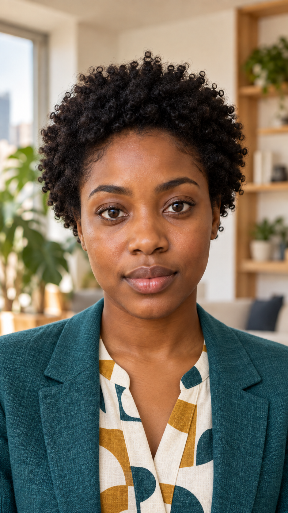English · Revised clothingMayaa softly tailored muted-teal linen blazer with narrow relaxed lapels, worn open over an ivory blouse with a tasteful ochre and dark-teal abstract geometric print; natural linen weave, no shoulder padsShow original
English · Revised clothingClairea cozy camel cable-knit cardigan worn open over an ivory and soft-blue vertically striped cotton shirt with a relaxed small pointed collar; visible cardigan buttons and rich knitted textureShow original
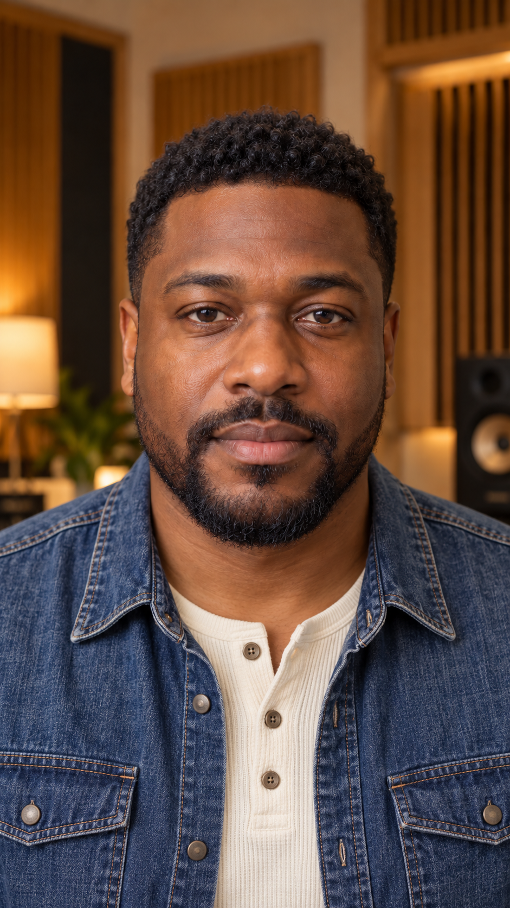English · Revised clothingMarcusa washed indigo denim overshirt with natural contrast stitching, two chest pockets and matte metal buttons, worn open over a warm off-white ribbed henley; casual contemporary layeringShow original
English · Revised clothingOwena forest-green ribbed quarter-zip sweater, partially unzipped over a pale-blue Oxford shirt with a small relaxed collar; distinct knitted ribs and a discreet antique-brass zipperShow original
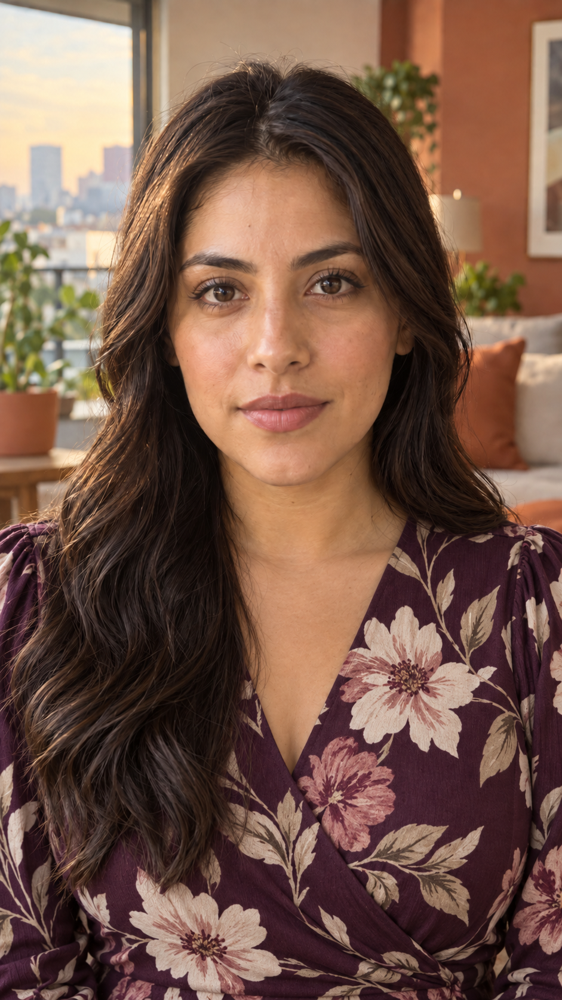Spanish · Revised clothingValeriaa deep-plum matte wrap blouse with a tasteful large ivory and dusty-rose botanical floral print, a modest overlapping V neckline and softly gathered sleeves; elegant casual fabric drapeShow original
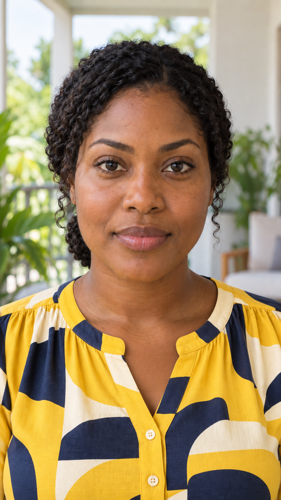Spanish · Revised clothingLucíaa sunflower-yellow blouse with a bold but tasteful broad ivory and navy geometric block print, a small button front, a gently notched neckline and soft gathered shoulder sleeves; cheerful contemporary designShow original
Spanish · Revised clothingMateoa cobalt-blue and warm-ivory wide color-block knit polo shirt with an open short polo collar and a three-button placket; clearly visible knitted texture, relaxed modern casual styleShow original
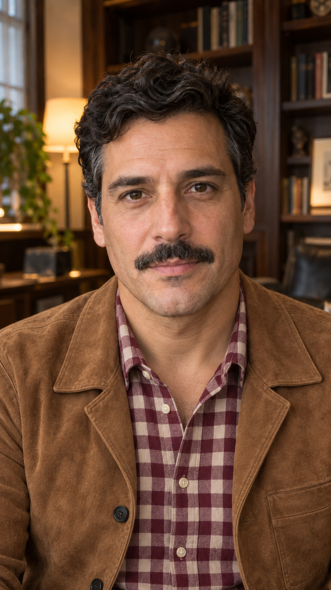Spanish · Revised clothingDiegoa warm-tan unstructured suede jacket with flat lapels and dark buttons, worn open over a burgundy and cream medium-check collared shirt with the top button open; rich natural suede textureShow original
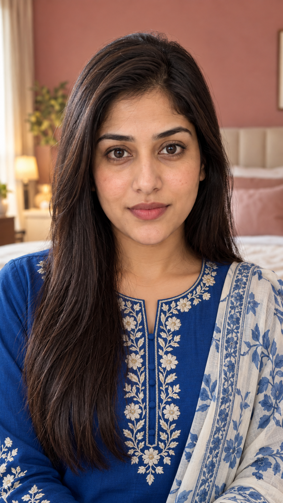Urdu · Revised clothingAyeshaa sapphire-blue cotton kurta with tasteful cream floral embroidery around the modest neckline and down a short front panel, with a lightweight cream-and-blue printed dupatta draped loosely over one shoulder well below the neck; embroidery and soft fabric texture clearly visibleShow original
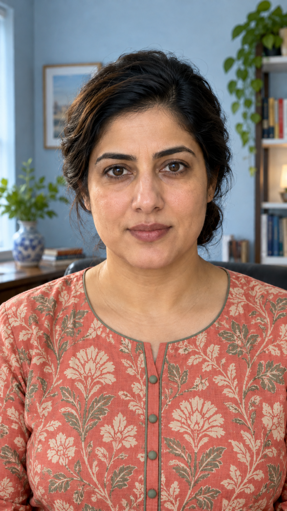Urdu · Revised clothingZaraa muted-coral cotton kurta with a tasteful all-over cream and sage block-printed botanical pattern, a narrow button placket and sage piping at the modest neckline; relaxed natural woven textureShow original
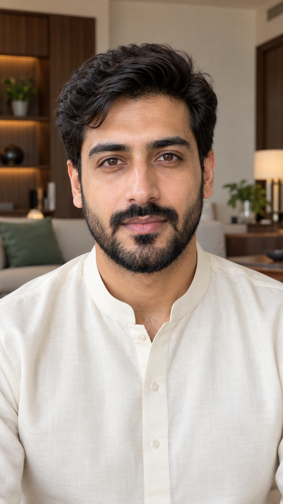Urdu · Original retainedHamzasolid ivory band-collar kurta with a clean simple necklineShow original
Urdu · Revised clothingBilala navy knitted V-neck sweater vest with large muted-gray and ochre argyle diamonds, over a pale-blue cotton button-down shirt with a neat relaxed collar; visible layered construction and knit textureShow original
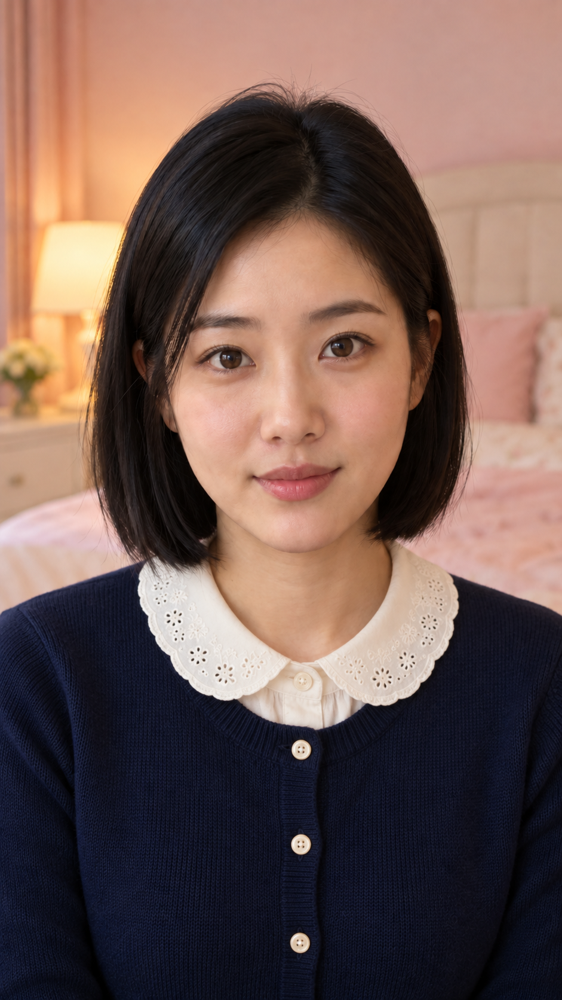Chinese · Revised clothingMeia navy fine-knit button-front cardigan with small ivory buttons over an ivory blouse with a delicate rounded Peter Pan collar and subtle eyelet embroidery; tasteful modern vintage stylingShow original
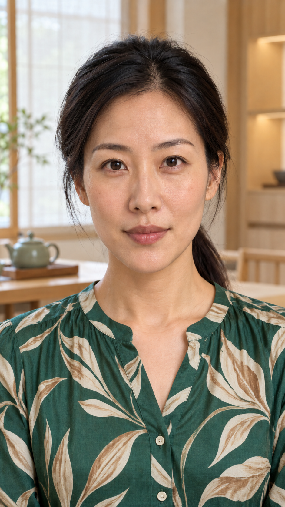Chinese · Revised clothingLana jade-green softly draped blouse with a tasteful cream and warm-tan abstract leaf print, a shallow open band collar and a short button placket; softly lustrous natural fabric, elegant casual stylingShow original
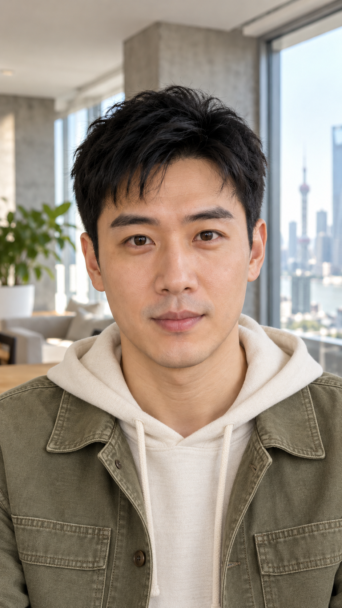Chinese · Revised clothingWeia light-olive canvas chore jacket with patch chest pockets and visible seams, worn open over a warm-ivory soft hoodie; hood resting flat behind the shoulders and away from the face, casual contemporary layered clothingShow original
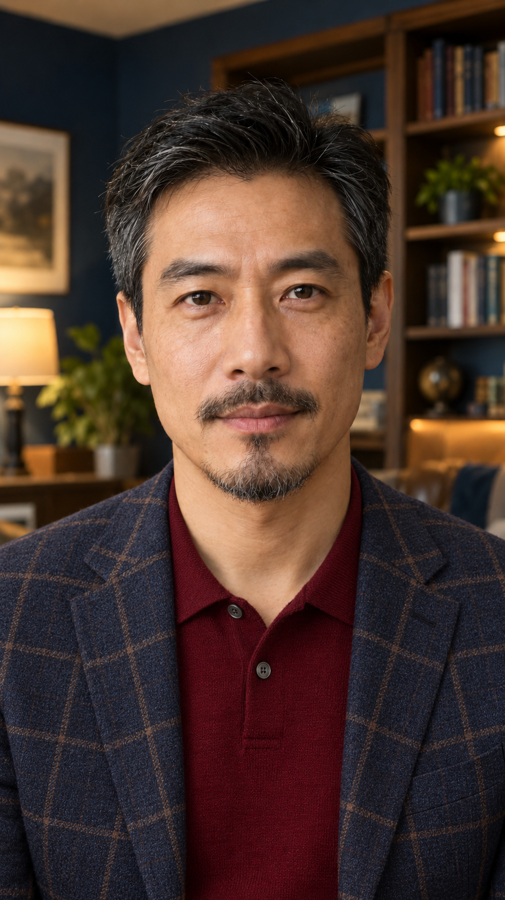Chinese · Revised clothingJuna navy and muted-brown windowpane-check unstructured sport coat, worn open over a deep-burgundy fine-knit polo with a small relaxed collar; understated mature casual tailoring and varied fabric texturesShow original